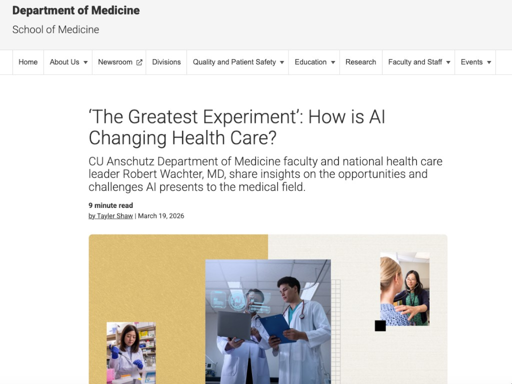
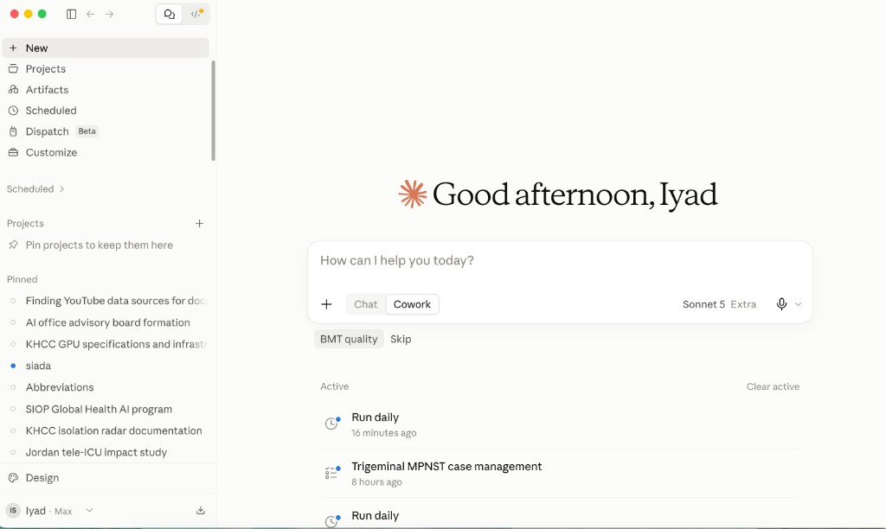

Global Health Session
AI at the
Bedside
A practical hour for the whole childhood cancer team
Iyad Sultan, MD · King Hussein Cancer Center
Disclosure
No conflicts.
Only KHCC.
I have no conflict of interest. I am not affiliated with Anthropic, OpenAI, Google, Perplexity, or any other AI company. My only institutional affiliation is King Hussein Cancer Center.
Language models
Four names. Same work.
Claude
ChatGPT
Gemini
Perplexity
And they all hallucinate.
Right often enough to be useful. Wrong often enough not to be trusted.
CU Anschutz · 19 March 2026
Department of Medicine
‘The Greatest Experiment’: How is AI Changing Health Care?
Robert Wachter, MD · Tayler Shaw
“I think we are in the early stages of probably the greatest experiment in the history of medicine.”
Right often enough to be useful. Wrong often enough not to be trusted.
Shaw T. CU Anschutz Department of Medicine, 19 March 2026.
The same piece, on the page

UCSF · Bob Wachter
Hear it in his own voice
A short Instagram reel. Click play in the frame. If the congress network blocks it, open the link.
We are not here to pick a brand. We are here to learn a way of working.
First: two seats at the same desk.
claude.ai
Chat versus Cowork
Chat
A conversation in the window.
- You type. It answers.
- Attach a file if you need one.
- Good for thinking, a draft, a quick check.
Cowork
You pick a folder on your computer.
- It can read and write those files.
- A report, a protocol, a set of slides.
- Like a colleague at your desk, not a chat box.
Same model. Different job.
Chat versus Cowork
What actually changes
| Chat | Cowork | |
|---|---|---|
| Files stay on your computer | No — you attach them | Yes — they stay in the folder |
| File size limit | Upload cap | No upload cap |
| Data still goes to Anthropic | Yes | Yes |
| Rules so PHI does not leave | Too late — you already pasted it | Possible. Needs work. |
| Organizing a project | One long chat | A folder. Easier. |
| Skills and extra tools | In the window | Easier to import and use |
| Work from anywhere | Everywhere | Everywhere |
The same switch, on the screen
